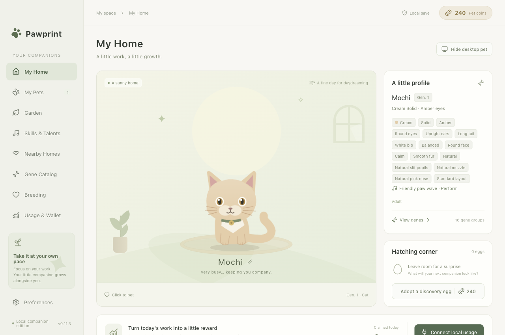
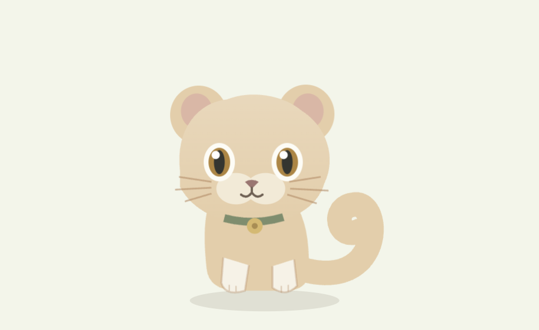
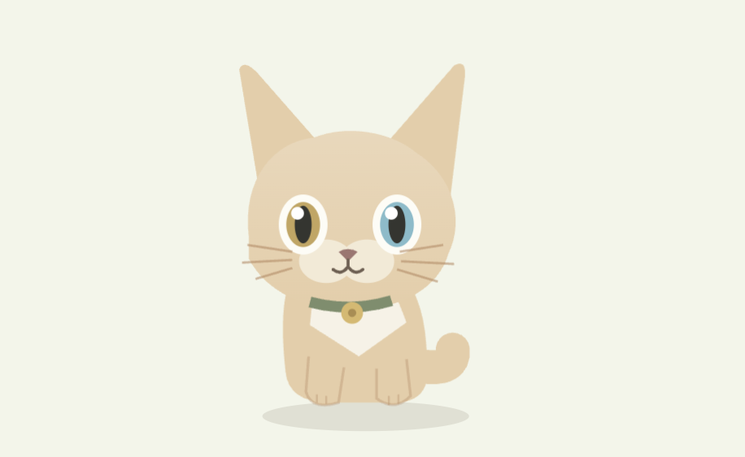

A DESKTOP WITH A LITTLE LIFE
安静陪你，也会玩耍。
眨眨眼、抖抖耳朵、摇摇尾巴，再找个喜欢的地方陪你待着。

领养一枚宠物蛋，遇见有自己模样的小猫。它安静待在桌面角落，你日常使用 Codex 的过程也会陪它慢慢成长。
未签名的 macOS 内测版 · Apple 芯片 慢慢来，也很好。
慢慢来，也很好。眨眨眼、抖抖耳朵、摇摇尾巴，再找个喜欢的地方陪你待着。



双方愿意连接时，伙伴可以在局域网串门与繁育。聊天内容和使用记录仍留在你的 Mac 上。
下载最新版本，把 Pawprint 放进「应用程序」。以后可以在应用内检查更新，确认后下载并安装经过校验的版本。